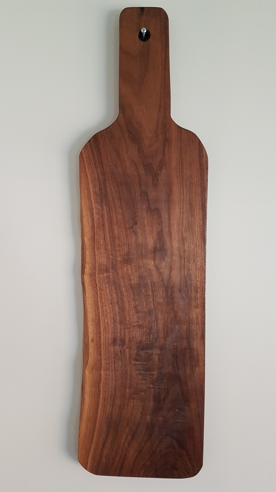
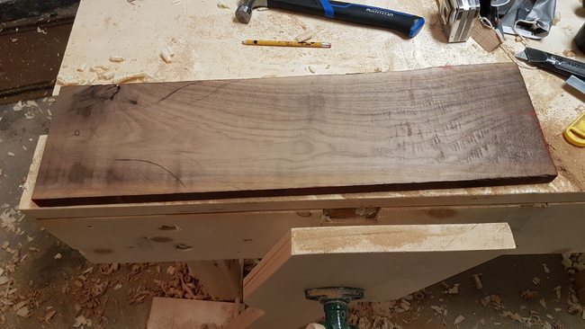
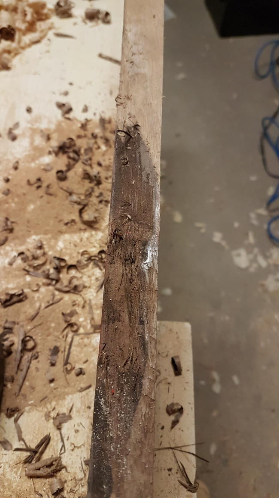
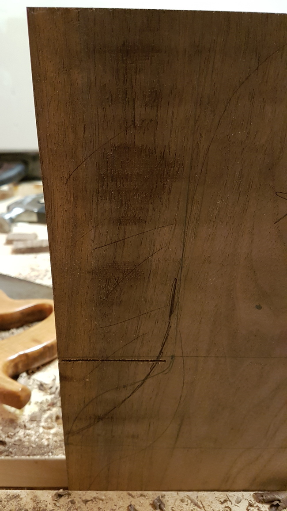
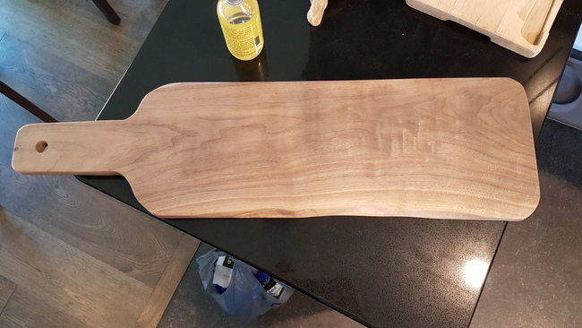
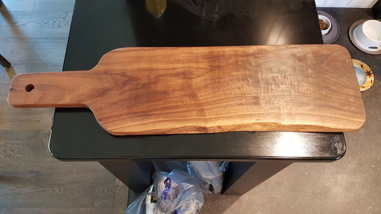

I made a charcuterie board for my mother as a birthday gift out of black walnut.
Our family has semi regular charcuterie nights but so far we've been using old bamboo IKEA boards; not very aesthetically pleasing.
Therefore it was high time we got a nice looking board, and what could be better than one I made myself?
The Wood
I took my mom to a local wood supply store to choose the ideal wood, taking her input on the looks, and my thoughts on price, workability, and suitability for getting food/drink inevitably spilled on it. For price, while a big slab of teak would be beautiful, it of course would be too expensive at maybe $100 for this size of board. While elm is cheap here, it's a hard wood to work so I'd be worried about using it. Something like red oak would have difficulties since the wide pores would let any liquids seep in readily, making it unsuitable.
We ended up with several classic woods that are a good compromise of price, workability, and suitability for wood: cherry, maple, and walnut. Of these mom chose the walnut as being the prettiest, so we got that.
I found a semi-rough 4/4 inch thickness piece being sold at a discount, that I could fix up easily. The dimensions were roughly 28" long by 9" wide by 1" thick.
It had a big knot that I could cut around, along with a line of what looked like machining dents when it was put through the planer - the dents had some tearout at the bottom. The wood also had the grain meet in a peak in the middle, making planing along it difficult.
There was a live edge along part of one side of the board.
At $8 per board foot compared to $17 a board foot for the prime walnut I think this was a good value. The price is still not great, but I'm not some big shop making thousand foot orders from a wholesaler so I should keep my complaining to a minimum.

Design
One of my favorite things about woodworking is when you can let your personal sense of aesthetics show in your work, which I'll elaborate on.
Material Conditions
I think that the choice of material is coupled with the design of a piece, in that the design influences the material and the material influences the design. If you try to go for a sleek modern design, it makes sense to use modern sleek materials. You could use a rustic material, but that would require a particularly strong harmonizing skill to achieve, which some people certainly possess, but not I. Most of the time the product will show internal dissonance because it's trying to fulfil a design with a material which simply isn't up to the task. In the same way a rustic design lends itself well to rustic materials, and the use of modern materials in rustic design gives a similar dissonance.
Therefore the design process is influenced by an initial input (material or design) and then interplays between the ideal and real to reach a form that fits the fill, and fill that fits the form. This is very similar to the idea of seeing a completed object in the base materials, that the material has an ideal form that it should occupy. Alternately, you can look at an ideal design as one that needs the right material to make it come into the real world, and once a near match is found (a true match is unlikely) then the design needs just some small tweaks to accomodate the nature of the material.
Applying Constraints
With a general intuitive ruleset to work with I then decided on how to make an idea and a block of wood into a charcuterie board. The large knot in the wood needed to go, in my mind it's too rough for what I want, so I chose that side of the board to have the handle. Since the board is fairly long relative to its width, I thought that a linear handle would enhance the length factor, which is also enforced by the grain direction.
The wood is somewhat battered and rough, and while I deemed bandsaw marks to be unsightly and foodsafe, I saw no reason not to incorporate the more mild variations.
I removed the bark from the live edge and also smoothed it slightly, striking a balance between pure geometry on one side and a wink towards the free flowing nature of the wood on the live side. I added rounded curves to the edges of the board and a gentle s-curve from the handle to paddle of the board.

A conscious decision I made was to do all the curves freehand with a chisel, only eyeballing for symmetry, and not following any pre-existing curve design. This is because I felt it suited the roughness of the board, while also not looking amateurish. If you look closely you'll see that, much like the face of a person, the sides of the board aren't completely symmetrical.

If the curves were geometric pefection, then the live edge and rough marks would look like undesirable effects of a low quality material. Instead, with the free flowing nature of the live edge given to all sides of the board, it harmonizes the parts together.
Finishing Touches
I made sure that other than the milling dents, that the board was flat and had no rough parts by using a hand plane on both sides. I likewise used sandpaper to remove any chisel marks from the edges, but kept any large scale imperfections.
Finally I added a food safe wood oil (the exact oil is unknown, perhaps something I should look into) and deemed it complete.

